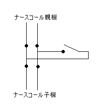

ナースコールコネクタ
ナースコールのコネクターは，病院によって形状が異なります．世の中には一体何種類のコネクターがあるのかはわかりませんが，少なくとも数種類以上はあるようです．
まず，ナースコールを納入，設置した業者さんに，使用しているコネクタとレセプタクルの型番とそして現在でも入手可能か（これが重要です！）をお問い合わせになることをお勧めします．
このページでは当院のナースコールシステムで使用しているコネクターで説明します．もちろんこれがそのままどこの病院でも使用できる保証はありません．
当院のナースコールシステムは，２０００年に更新され，現在松下電産の製品を使っています．看護師さんの手元のＰＨＳに部屋番号とベッド番号が表示され，病室との会話がこれで可能なところが特徴です．
当科で製作した特殊ナースコールには，写真のようなコネクタをつけています．

プラグ（写真上）は，トーコン（株），YVRAｰ16P2FB，参考価格１０００円
レセプタクル（写真下）は，トーコン（株），YVRAｰ16BR2M，参考価格２０００円
（外見をよくするために，出来るならばレセプタクルではなくジャックを使いたいところでしたが，製品として存在しませんでした．ところがこのようながさつな外見であるために，故障（断線）すると誰でもすぐに気がつくという利点があることもあとでわかりました）
プラグは，壁面のレセプタクルに，レセプタクルは，ベッドサイドのナースコール子機につなぎます．

回路図にするとこのようになります．このような回路をつくる理由は，ナースステーションの親機（ＰＨＳも同様）とベッドサイドの子機の通話機能を損なわないため．そして必要に応じて数珠繋ぎ（デイジーチェーン）にして複数のスイッチを使えるようにすること．そして最後に設置と回収作業を能率よく行うためです．